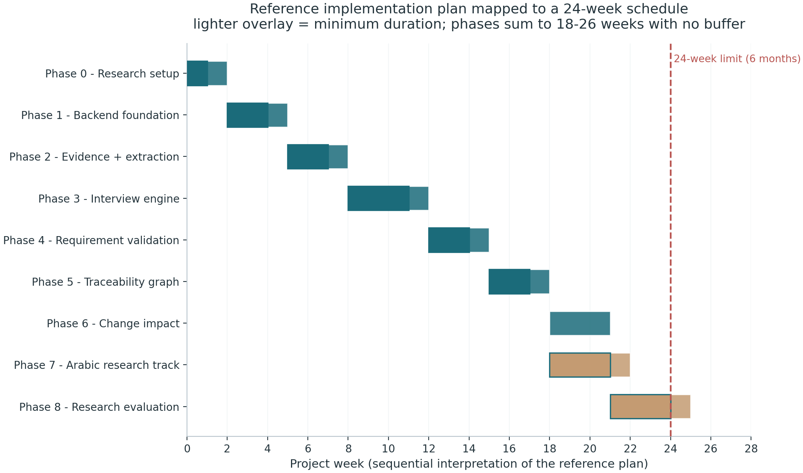

Arithmetic: nine phases sum to 18–26 weeks against a 24-week window — zero buffer at maximum durations
Composition: the two most valuable contributions are the two most expensive — planner ablations need Phase 3 stable; the Arabic benchmark sits in months 5–6
Concentration: the question planner is a single-owner critical path (Member 1) — co-assign in month 3 (Action 8)
Team: sensible four-way split (LLM/interview · NLP/Arabic/data · backend/graph · frontend/QA), but execution-side risk is underweighted in the document.